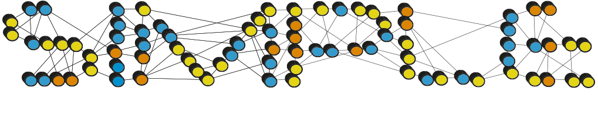
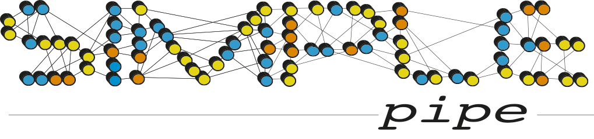
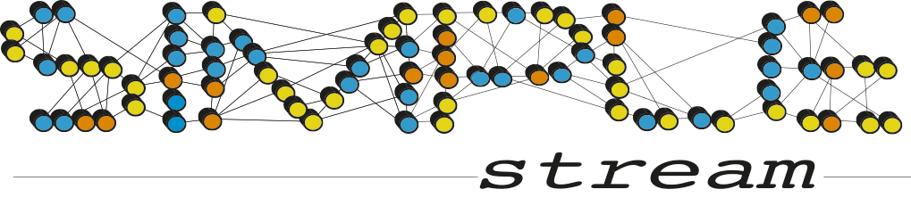
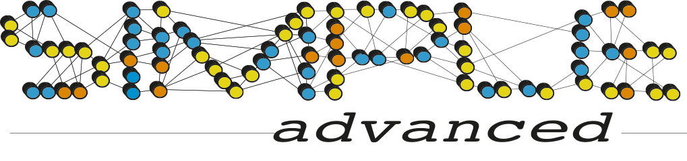

<DOCTYPE html>
<html>
 <head>
  <link rel="stylesheet" href="css/job.css">
 </head>
 <body>
	 
  <div class=title>
	
   New Job
   <div class=modeselector onclick="showHideModeSelect()">
	
	<div class=modeimages id=modeimages>
		
		
		
		
	</div>
   </div>
   
  </div>
  <div class=jobheader>
		<div class=job data-advanced=yes onclick='showJobPage("external.html")'>External</div>
		<div class=job data-standard=yes data-pipeline=yes data-stream=yes data-advanced=yes onclick='showJobPage("sync.html")'>Microsope Sync</div>
		<div class=job data-pipeline=yes data-stream=yes data-advanced=yes onclick='showJobPage("preproc_pipeline.html")'>Preprocessing Pipeline</div>
		<div class=job data-standard=yes data-advanced=yes onclick='showJobPage("unblur.html")'>Motion Correction</div>
		<div class=job data-standard=yes data-advanced=yes onclick='showJobPage("ctffind.html")'>CTF Estimation</div>
		<div class=job data-standard=yes data-advanced=yes onclick='showJobPage("manualpick.html")'>Manual Picking</div>
		<div class=job data-standard=yes data-advanced=yes onclick='showJobPage("autopick.html")'>Automated Picking</div>
		<div class=job data-standard=yes data-advanced=yes onclick='showJobPage("extract.html")'>Particle Extraction</div>
		<div class=job data-standard=yes data-pipeline=yes data-advanced=yes onclick='showJobPage("prime2d.html")'>2D Clustering</div>
		<div class=job data-stream=yes data-advanced=yes onclick='showJobPage("prime2d_stream.html")'>Prime 2D Stream</div>
		<div class=job data-standard=yes data-pipeline=yes data-stream=yes data-advanced=yes onclick='showJobPage("ini3d.html")'>Initial Model Generation</div>
		<div class=job data-standard=yes data-pipeline=yes data-stream=yes data-advanced=yes onclick='showJobPage("preproc.html")'>3D Refinement</div>
		<div class=job data-standard=yes data-pipeline=yes data-stream=yes data-advanced=yes onclick='showJobPage("postprocess.html")'>Post Processing</div>
		<div class=job data-standard=yes data-pipeline=yes data-stream=yes data-advanced=yes onclick='showJobPage("preproc.html")'>Heterogeneity Analysis</div>
	</div>
	<div class=jobiframe>
		<iframe id=jobiframe></iframe>
	</div>
  <script src="js/job.js"></script>
  <script>showJobs(document.getElementsByClassName('modeimage')[0], "data-standard")</script>
  <script>showReRun()</script>
 </body>
</html>
